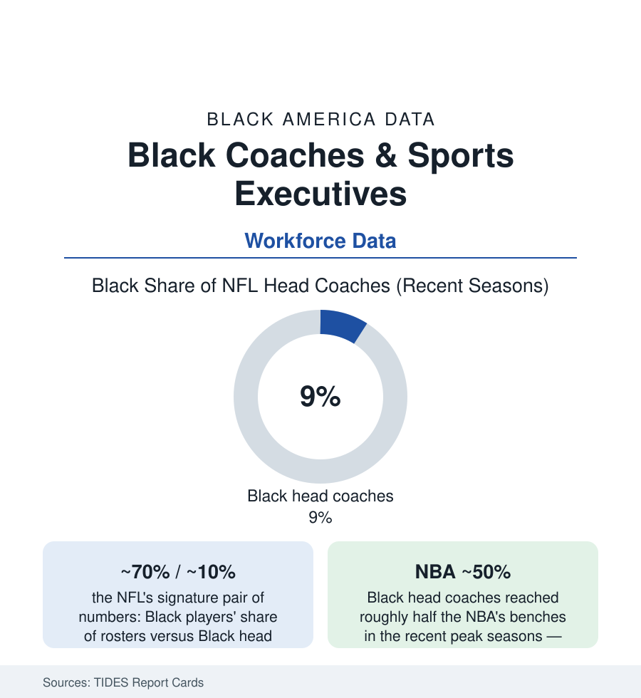

Black Employment
Black Coaches and Sports Executives: The Pipeline Everyone Can See
Black athletes are most of the NBA and two-thirds of the NFL — and a tenth of NFL head coaches. The TIDES report-card data on sports' most visible workforce gap.

No workforce gap in America is televised like this one. Black athletes constitute roughly seventy percent of NFL rosters and three-quarters of the NBA's, and the men directing them from the sideline are Black at rates the TIDES report cards have graded annually for three decades: roughly one in ten NFL head coaches in the recent seasons, a small handful of MLB managers, and — the leagues' great exception — an NBA head-coaching corps that reached about half Black in its recent peak years. The front offices run thinner than the benches. Sports is the one industry whose pipeline argument cannot plead invisibility: the qualified pool wears numbers on its back, on camera, every Sunday. This article reads the report cards.
The Leagues' Ledgers
The TIDES grades by league draw the map: the NFL (players about 70% Black in the recent counts; head coaches oscillating between three and six of thirty-two across the last two decades — the post-2003 era of the Rooney Rule, the interview mandate whose two decades of data constitute the file's central policy exhibit; offensive coordinators — the head coach's antechamber in the modern hiring pattern — thinner than the defensive side, the quarterback-coach pipeline the current bottleneck in the analysts' tracking; general managers in the high single digits to low teens of the thirty-two chairs in the recent seasons, the strongest front-office line in the league's data). The NBA (players about 74% Black; head coaches peaking near 50% in the 2022-23 count before settling in the 40s; team presidents and general managers lower, in the 20s-30s percent; the league office itself the most diverse in sports in the report cards). Baseball (Black American players down to roughly 6% of rosters — the participation file's own story — with managers countable on one hand in most seasons and the front offices graded the majors' thinnest). College sports mirror at scale: FBS head football coaches Black at roughly one in ten of 130-plus chairs (from a player pool near half), athletic directors thinner, the HBCU programs standing outside the Power-conference arithmetic as the parallel institution.
How Hiring Actually Works: The Network Data
The hiring research explains the persistence in the industry's own terms: head-coaching hires run through the coordinator trees and the agent-and-owner networks (the 'coaching tree' genealogy studies mapping hires to a small set of mentor lineages — access to a tree being the career's true credential), the interview mandates' compliance data (the Rooney Rule era's interview counts rising while its hire counts wobbled — the 'sham interview' critique documented in specific, litigated cases in the current record — avoid adjudicating: the data this article cites are the counts themselves, which show interviews decoupling from hires in several cycles), and the quarterback variable (the position's own racial history — Black quarterbacks now a third of the league's starters, a revolution completed in a generation — feeding the offensive-coordinator pipeline on a lag, the next decade's coaching data already partly written by it). The ownership tier caps the structure: Black controlling owners across the four major leagues at zero to one per league in the current counts (the NBA's sole Black majority governor a recent and singular entry in the record; limited partners more numerous) — the chairs that hire the chairs.
The Counter-Evidence and the Stakes Beyond Sports
The file's internal optimists cite the trend instruments: the league diversity offices' fellowship pipelines (the coaching and scouting fellowships now formalized in all four leagues), the expanded interview rules (in-person, multiple-candidate requirements in the NFL's current policy), the NBA's demonstration effect (a decade of Black coaches at near-parity producing championship and coach-of-the-year winners in proportion — removing the performance alibi from the dataset entirely), and the players' associations' own pressure (the NBPA's and NFLPA's published engagement on hiring). The stakes run past the leagues because the sports file is America's most public dataset on a universal mechanism — the visible-pool problem: every industry in this section claims a pipeline; sports is the one whose pipeline is measured in prime time. Its numbers therefore function as the control case for the national argument — if a league with a 70% Black labor pool, a written interview rule, an annual public report card, and a century of Black excellence on the field still hires at one in ten, the mechanism the data indict is not the pipeline. It is the room where the hiring happens.
Reading the Sports Data
Seventy percent of the players, ten percent of the coaches, near zero of the owners: the report cards grade the steepest representation slope in this atlas, in the industry least able to plead that the talent cannot be found. The NBA's near-parity decade stands as the proof that the slope is a choice variable. The other leagues' annual grades will keep arriving each season, in public, with the whole country watching the arithmetic it has already seen.
More in Black Employment
The Black Unemployment Rate: The Two-to-One Pattern
Black unemployment runs at roughly twice the White rate — 5.5 percent against 3.3 percent in annual averages — a ratio stable across five decades of federal data. How it is measured and why it persists.
Black Median Weekly Earnings: The 80-Cent Ratio
Black full-time workers earn a median of about $900 a week — roughly 80 cents for every dollar White workers earn. The BLS earnings data by group, gender, and occupation.
Black Labor Force Participation: Working at National Rates
Black labor force participation runs at roughly the national rate — and Black women participate at higher rates than White women. The BLS participation data.
Source: The Institute for Diversity and Ethics in Sport (TIDES) Racial and Gender Report Cards; league records; National Basketball Players Association and coaching association data.